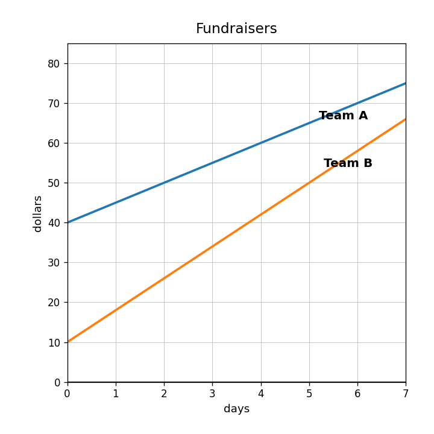
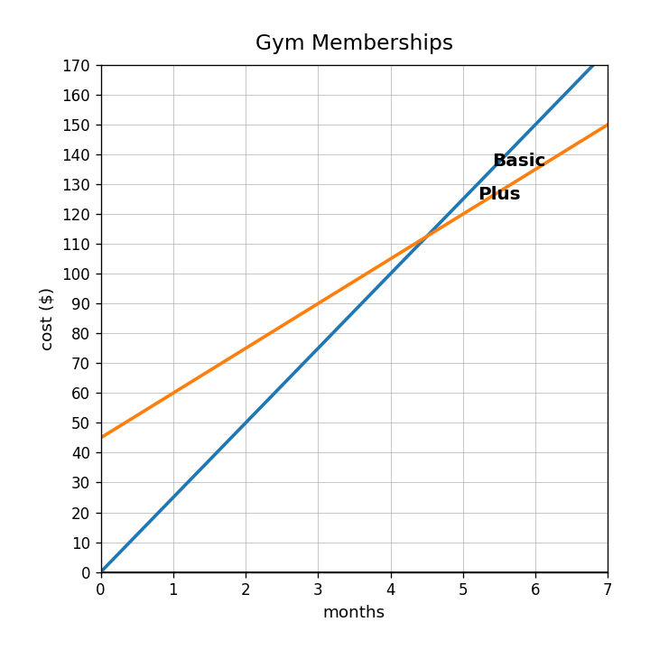
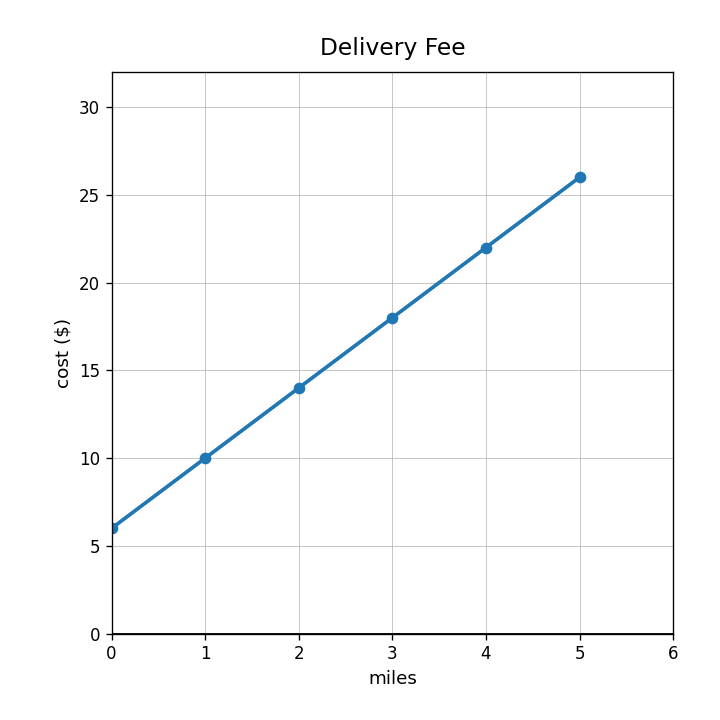

Use the fundraiser graph. Which team has the greater starting amount?

Use the graph. Which gym option is cheaper at 2 months? Which is cheaper at 6 months?

A graph crosses the $y$-axis at 6 and rises 4 for every 1 right. A table has outputs 8, 12, 16, 20 for inputs 0, 1, 2, 3. Compare the starting values and rates of change.
You need to decide when two plans cost the same: $A=12x+20$ and $B=18x+2$. Explain whether a table, graph, or equation is most useful and use it to support your decision.
Identify the rate of change in $C=3.50m+9$.
Identify the starting value in $S=75-6w$.
Write an equation for the delivery fee graph.

Write the equation for “start at 14 and add 9 each step.”
Write a model for the table.
| hours | 0 | 1 | 2 | 3 | 4 |
|---|---|---|---|---|---|
| dollars | 18 | 30 | 42 | 54 | 66 |
A fish tank starts with 10 gallons and fills at 3 gallons per minute. Write an equation for gallons $g$ after $m$ minutes.
Explain how the graph of $y=2x+9$ would show both the 2 and the 9.
Create a decreasing linear model, a context, and two points that fit the model.
Rewrite $3(n+9)$ without parentheses.
Factor $10x+25$ using the greatest common factor.
A student simplifies $8x+3x+5$ as $16x$. Identify the error and correct the expression.
A class trip cost can be written as $12s+48$ or $12(s+4)$. Create a context where both forms make sense and explain what each form reveals.